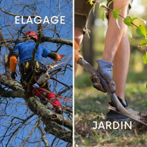
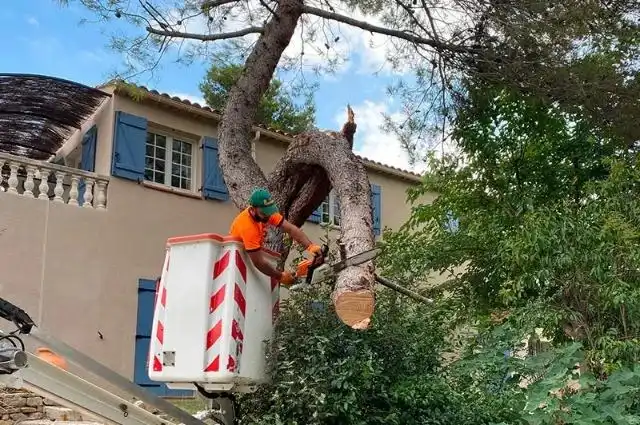
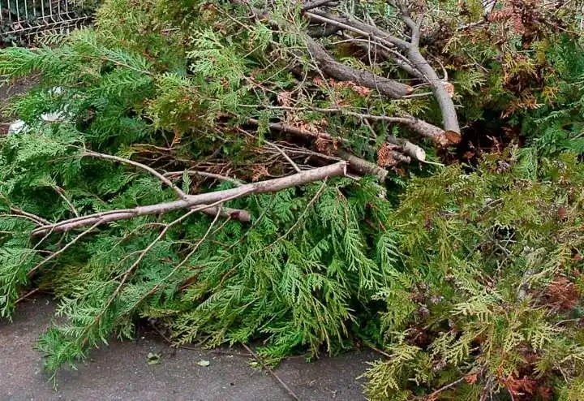

Votre expert en élagage et entretien d’arbres en Essonne
Basé à Athis-Mons, Robert Élagage est votre expert en élagage, abattage et paysagisme en Essonne. Nous intervenons dans tout le 91, notamment à Viry-Châtillon, Épinay-sur-Orge, Juvisy-sur-Orge, Savigny-sur-Orge, Massy et alentours, pour entretenir vos arbres et sublimer vos jardins. Nos arboristes qualifiés utilisent des techniques modernes pour des travaux sécurisés, qu’il s’agisse de tailles esthétiques, d’abattages complexes ou de débroussaillage. Avec 9 ans d’expérience, nous offrons des services sur mesure pour particuliers et professionnels. Demandez un devis gratuit et découvrez pourquoi nous sommes la référence en jardinage en Essonne !
Demander un devis gratuitDevis et déplacements gratuits dans le 91
Élagage, abattage, taille et entretien de jardins à Athis-Mons, Viry-Châtillon, Épinay-sur-Orge, Juvisy-sur-Orge et en Essonne
Votre jardin a besoin d’un professionnel ? Besoin de tailler une haie, d’éliminer des herbes parasites, ou d’abattre des arbres imposants dans le 91 ? Vous cherchez un expert pour évacuer vos déchets verts ?
Basé à Athis-Mons, Robert Élagage propose des solutions sur mesure pour vos travaux de jardinage en Essonne. Nos jardiniers expérimentés mettent leur savoir-faire au service de vos espaces verts à Viry-Châtillon, Épinay-sur-Orge, Juvisy-sur-Orge, Savigny-sur-Orge, Massy et alentours. Votre jardin mérite un entretien soigné pour rester esthétique et sécurisé. Prenez soin de vos arbres et arbustes avec nos services professionnels !
Votre jardinier, compétent et disponible du lundi au samedi, intervient dans tout le département, de Juvisy-sur-Orge à Savigny-sur-Orge, pour entretenir votre végétation. Que vous soyez particulier ou professionnel en Essonne, nous garantissons des prestations de qualité.
Avec 9 ans d’expérience, Robert Élagage propose une gamme complète de services pour répondre à vos besoins en jardinage :
Équipés de matériel performant, nous vous conseillons sur la taille adaptée à vos arbres selon leur environnement, la saison et l’état du sol. Nous évacuons également vos déchets végétaux pour un jardin impeccable à Athis-Mons, Viry-Châtillon, Épinay-sur-Orge, Juvisy-sur-Orge et dans tout le 91.
Pour vos travaux d’entretien de jardin ou pour plus d’informations, contactez Robert Élagage dès maintenant.